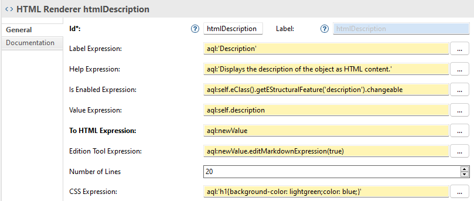
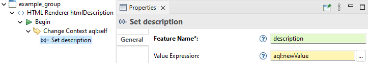
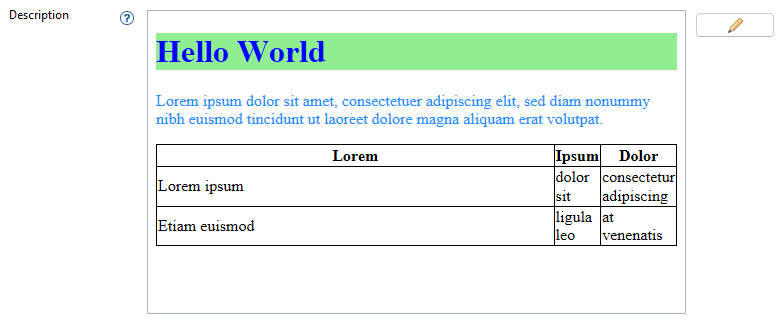

The HTML Renderer widget is used to display values that can be represented as HTML Content. On top of the common properties of all widgets (identifier, labelExpression, helpExpression, isEnabledExpression, propertyValidationRules), it has the following properties:
newValue variable) into HTML content. The computed result is a String in HTML format. This expression must return a string.
org.eclipse.eef.ide.ui.ext.widgets.markup.markdown.MarkdownService#editMarkdownExpression(String, boolean) for an example to edit Markdown content). A
newValue variable is available containing the result of
valueExpression. If this expression is not provided then the
Edit Button is not displayed. This expression should return a String that is then given to the
editExpression to execute an action with the result.
In order to display an HTML content in the user interface with the value of an EAttribute with the eType EString (i.e. the description of an EObject), you can create an HTML Renderer widget with the following properties:


Here is a result of the displayed HTML Content with this widget in the Properties View:

EEF does not provide a default interpreter but you can easily configure EEF to be used with the AQL interpreter. In the integration of EEF with the AQL interpreter, you can register additional services, written in Java, in which you can expose to AQL new operations. The operation
eSet(java.lang.String, java.lang.Object) used in the example does not exist in AQL. You would have to create it yourself.